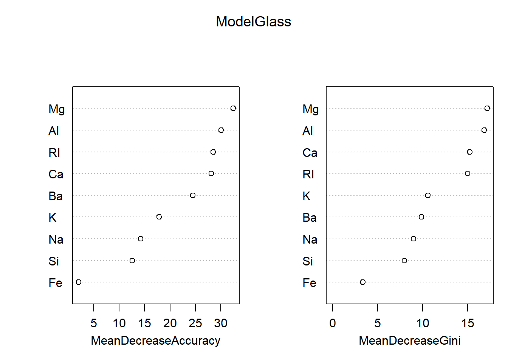
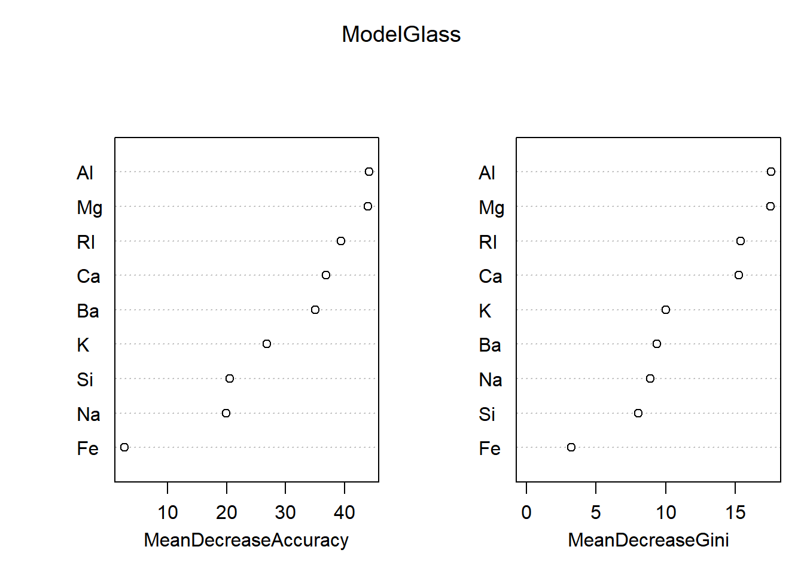

Frontpage Data visualisation Parametizing data Directory structure R-package SQL Zotero Reproductibility Future endeavours Free research (Machine learning) CV Bibliography
Perfoming the entire randomForest workflow on the glass dataset
library(mlbench)
data(Glass)
set.seed(4321)
ind_glass<-sample(2, nrow(Glass), replace=TRUE, prob=c(0.67,0.33)) #Creating a random selection of datapoints
glass_training<-Glass[ind_glass==1,] # Separating the training the training and the testing datasets
glass_test<-Glass[ind_glass==2,]
knitr::kable(summary(glass_training))| RI | Na | Mg | Al | Si | K | Ca | Ba | Fe | Type | |
|---|---|---|---|---|---|---|---|---|---|---|
| Min. :1.511 | Min. :11.02 | Min. :0.000 | Min. :0.290 | Min. :69.89 | Min. :0.0000 | Min. : 5.430 | Min. :0.0000 | Min. :0.00000 | 1:49 | |
| 1st Qu.:1.517 | 1st Qu.:12.89 | 1st Qu.:2.703 | 1st Qu.:1.190 | 1st Qu.:72.33 | 1st Qu.:0.1375 | 1st Qu.: 8.295 | 1st Qu.:0.0000 | 1st Qu.:0.00000 | 2:50 | |
| Median :1.518 | Median :13.28 | Median :3.475 | Median :1.345 | Median :72.80 | Median :0.5600 | Median : 8.615 | Median :0.0000 | Median :0.00000 | 3:13 | |
| Mean :1.518 | Mean :13.42 | Mean :2.819 | Mean :1.425 | Mean :72.70 | Mean :0.4599 | Mean : 8.830 | Mean :0.1589 | Mean :0.05708 | 5: 7 | |
| 3rd Qu.:1.519 | 3rd Qu.:13.78 | 3rd Qu.:3.592 | 3rd Qu.:1.583 | 3rd Qu.:73.07 | 3rd Qu.:0.6000 | 3rd Qu.: 9.062 | 3rd Qu.:0.0000 | 3rd Qu.:0.09000 | 6: 7 | |
| Max. :1.534 | Max. :17.38 | Max. :4.490 | Max. :3.500 | Max. :75.41 | Max. :2.7000 | Max. :16.190 | Max. :2.2000 | Max. :0.51000 | 7:18 |
knitr::kable(summary(glass_test))| RI | Na | Mg | Al | Si | K | Ca | Ba | Fe | Type | |
|---|---|---|---|---|---|---|---|---|---|---|
| Min. :1.513 | Min. :10.73 | Min. :0.000 | Min. :0.470 | Min. :69.81 | Min. :0.0000 | Min. : 6.470 | Min. :0.0000 | Min. :0.00000 | 1:21 | |
| 1st Qu.:1.516 | 1st Qu.:12.96 | 1st Qu.:0.000 | 1st Qu.:1.173 | 1st Qu.:72.20 | 1st Qu.:0.1100 | 1st Qu.: 8.180 | 1st Qu.:0.0000 | 1st Qu.:0.00000 | 2:26 | |
| Median :1.518 | Median :13.32 | Median :3.495 | Median :1.410 | Median :72.78 | Median :0.5500 | Median : 8.595 | Median :0.0000 | Median :0.00000 | 3: 4 | |
| Mean :1.519 | Mean :13.38 | Mean :2.408 | Mean :1.486 | Mean :72.55 | Mean :0.5734 | Mean : 9.218 | Mean :0.2083 | Mean :0.05686 | 5: 6 | |
| 3rd Qu.:1.521 | 3rd Qu.:13.91 | 3rd Qu.:3.607 | 3rd Qu.:1.695 | 3rd Qu.:73.10 | 3rd Qu.:0.6175 | 3rd Qu.: 9.640 | 3rd Qu.:0.0000 | 3rd Qu.:0.10000 | 6: 2 | |
| Max. :1.531 | Max. :15.15 | Max. :3.900 | Max. :3.040 | Max. :73.75 | Max. :6.2100 | Max. :14.680 | Max. :3.1500 | Max. :0.37000 | 7:11 |
ModelGlass<-randomForest::randomForest(Type ~ ., data=glass_training, importance = TRUE)
PredictGlass<-predict(ModelGlass, glass_test, type="class")
table(PredictGlass, glass_test$Type)##
## PredictGlass 1 2 3 5 6 7
## 1 19 0 3 0 0 0
## 2 2 23 0 3 1 1
## 3 0 1 1 0 0 0
## 5 0 2 0 3 0 0
## 6 0 0 0 0 1 0
## 7 0 0 0 0 0 10importance(ModelGlass)## 1 2 3 5 6 7 MeanDecreaseAccuracy MeanDecreaseGini
## RI 25.9516672 15.981884 8.6355170 3.01558132 5.2054141 8.1761219 28.527676 14.982608
## Na 7.0153218 3.465588 2.4742629 2.67561186 10.7079299 9.5412346 14.240678 8.973814
## Mg 20.7226854 18.360376 12.0696619 15.77226943 12.9410416 16.0526327 32.439182 17.157482
## Al 20.7919497 20.688041 7.8135932 11.89337555 0.4693794 15.1221411 30.049922 16.833501
## Si 11.3400744 2.932622 3.0995611 -0.07519902 4.6446785 2.7584307 12.602525 7.992729
## K 9.5158955 11.211496 5.0377273 2.96884643 14.7675552 7.7917593 17.856605 10.573783
## Ca 13.3933883 23.812395 5.5731976 11.54097673 2.0839665 5.9300857 28.135538 15.254431
## Ba 4.2571321 13.147049 4.7544812 3.80935388 6.1771571 26.1962433 24.494792 9.858269
## Fe 0.1021816 2.533907 0.7303576 -2.90363006 3.8284240 0.6368166 2.003686 3.380027varImpPlot(ModelGlass)
confusionMatrix(PredictGlass, glass_test$Type)## Confusion Matrix and Statistics
##
## Reference
## Prediction 1 2 3 5 6 7
## 1 19 0 3 0 0 0
## 2 2 23 0 3 1 1
## 3 0 1 1 0 0 0
## 5 0 2 0 3 0 0
## 6 0 0 0 0 1 0
## 7 0 0 0 0 0 10
##
## Overall Statistics
##
## Accuracy : 0.8143
## 95% CI : (0.7034, 0.8972)
## No Information Rate : 0.3714
## P-Value [Acc > NIR] : 3.969e-14
##
## Kappa : 0.7406
##
## Mcnemar's Test P-Value : NA
##
## Statistics by Class:
##
## Class: 1 Class: 2 Class: 3 Class: 5 Class: 6 Class: 7
## Sensitivity 0.9048 0.8846 0.25000 0.50000 0.50000 0.9091
## Specificity 0.9388 0.8409 0.98485 0.96875 1.00000 1.0000
## Pos Pred Value 0.8636 0.7667 0.50000 0.60000 1.00000 1.0000
## Neg Pred Value 0.9583 0.9250 0.95588 0.95385 0.98551 0.9833
## Prevalence 0.3000 0.3714 0.05714 0.08571 0.02857 0.1571
## Detection Rate 0.2714 0.3286 0.01429 0.04286 0.01429 0.1429
## Detection Prevalence 0.3143 0.4286 0.02857 0.07143 0.01429 0.1429
## Balanced Accuracy 0.9218 0.8628 0.61742 0.73438 0.75000 0.9545Without editing the mtry and ntree, we get a accuracy of ~ 0.81 (which, mind you, is already way higher than the original accuracy of ~ 0.7 given by the KKN model). Now we’ll test for the optimum mtry and kmean amount again, like with the cars dataset.
x=c()
for(i in 1:9){
Model3<-randomForest(Type ~ ., data= glass_training, ntree = 500, mtry = i, importance = TRUE)
PredictModel3<-predict(Model3, glass_training, type="class")
x[i]=mean(PredictModel3 == glass_training$Type)
}
data.frame(mtry=1:9,
prediction_power=x)## mtry prediction_power
## 1 1 1
## 2 2 1
## 3 3 1
## 4 4 1
## 5 5 1
## 6 6 1
## 7 7 1
## 8 8 1
## 9 9 1Conclusion: any mtry above 1 is good enough
y=c()
length<-c(1 %o% 10^(0:4))
for(i in c(1 %o% 10^(0:4))){
Model3<-randomForest(Type ~ ., data= glass_training, ntree = i, mtry = 6, importance = TRUE)
PredictModel3<-predict(Model3, glass_training, type="class")
y[i]=(mean(PredictModel3 == glass_training$Type))
}
data<-data.frame(prediction_power=y[length],
ntree=length)
data## prediction_power ntree
## 1 0.8402778 1
## 2 0.9791667 10
## 3 1.0000000 100
## 4 1.0000000 1000
## 5 1.0000000 10000Once again, any amount of Ntree above 1 is good enough
Based on these results, we can see that changing the mtry/ntree will not affect the data in any mayor way. However, to see if this hypothesis is truly true, we’ll test it anyway.
ModelGlass<-randomForest::randomForest(Type ~ ., data=glass_training, ntree = 1000, mtry = 3, importance = TRUE)
PredictGlass<-predict(ModelGlass, glass_test, type="class")
table(PredictGlass, glass_test$Type)##
## PredictGlass 1 2 3 5 6 7
## 1 19 0 3 0 0 0
## 2 2 23 0 1 1 1
## 3 0 1 1 0 0 0
## 5 0 2 0 5 0 0
## 6 0 0 0 0 1 0
## 7 0 0 0 0 0 10importance(ModelGlass)## 1 2 3 5 6 7 MeanDecreaseAccuracy MeanDecreaseGini
## RI 35.9425852 22.955617 12.6393173 3.2609681 8.0461891 10.125891 39.452868 15.374026
## Na 12.6946465 5.804545 2.7151993 9.8071309 12.1866461 13.824966 19.901691 8.870768
## Mg 31.4568425 23.237537 13.5906352 20.4221998 17.8087921 22.382001 43.929844 17.504698
## Al 31.3450931 30.832605 10.5723607 17.2216312 0.1824541 19.557992 44.152502 17.547209
## Si 19.5356383 4.501227 5.6543712 0.5365142 5.1377628 3.770462 20.553736 8.018075
## K 15.8786105 14.925417 5.7598017 2.2652263 19.8542689 10.047250 26.789079 10.013021
## Ca 16.3234783 32.337265 7.1320768 16.6442932 3.1952506 9.074469 36.829526 15.234269
## Ba 7.2861647 15.662737 6.3118076 4.0829257 7.0805242 39.179560 35.069476 9.358338
## Fe -0.8240873 3.557017 0.7700442 -3.5323248 5.3702326 1.195446 2.635895 3.208900varImpPlot(ModelGlass)
confusionMatrix(PredictGlass, glass_test$Type)## Confusion Matrix and Statistics
##
## Reference
## Prediction 1 2 3 5 6 7
## 1 19 0 3 0 0 0
## 2 2 23 0 1 1 1
## 3 0 1 1 0 0 0
## 5 0 2 0 5 0 0
## 6 0 0 0 0 1 0
## 7 0 0 0 0 0 10
##
## Overall Statistics
##
## Accuracy : 0.8429
## 95% CI : (0.7362, 0.9189)
## No Information Rate : 0.3714
## P-Value [Acc > NIR] : 6.15e-16
##
## Kappa : 0.783
##
## Mcnemar's Test P-Value : NA
##
## Statistics by Class:
##
## Class: 1 Class: 2 Class: 3 Class: 5 Class: 6 Class: 7
## Sensitivity 0.9048 0.8846 0.25000 0.83333 0.50000 0.9091
## Specificity 0.9388 0.8864 0.98485 0.96875 1.00000 1.0000
## Pos Pred Value 0.8636 0.8214 0.50000 0.71429 1.00000 1.0000
## Neg Pred Value 0.9583 0.9286 0.95588 0.98413 0.98551 0.9833
## Prevalence 0.3000 0.3714 0.05714 0.08571 0.02857 0.1571
## Detection Rate 0.2714 0.3286 0.01429 0.07143 0.01429 0.1429
## Detection Prevalence 0.3143 0.4000 0.02857 0.10000 0.01429 0.1429
## Balanced Accuracy 0.9218 0.8855 0.61742 0.90104 0.75000 0.9545Specifying the ntree to 1000 and mtry to 3 gives a small increase in accuracty, up to ~ 0.82.
With this, I’ve proven my skills in setting up a randomForest machine learning algorythm for a dataset, and performing small-scale optimisations to the algorythm. Next, as final research subject, we’ll move on to a randomForest-based machine learning technique specifically made for micriology: IDTAXA